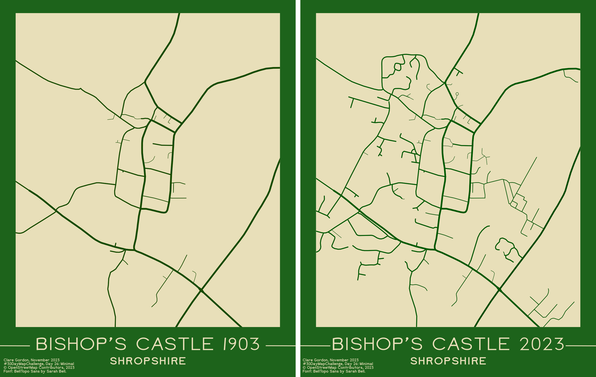
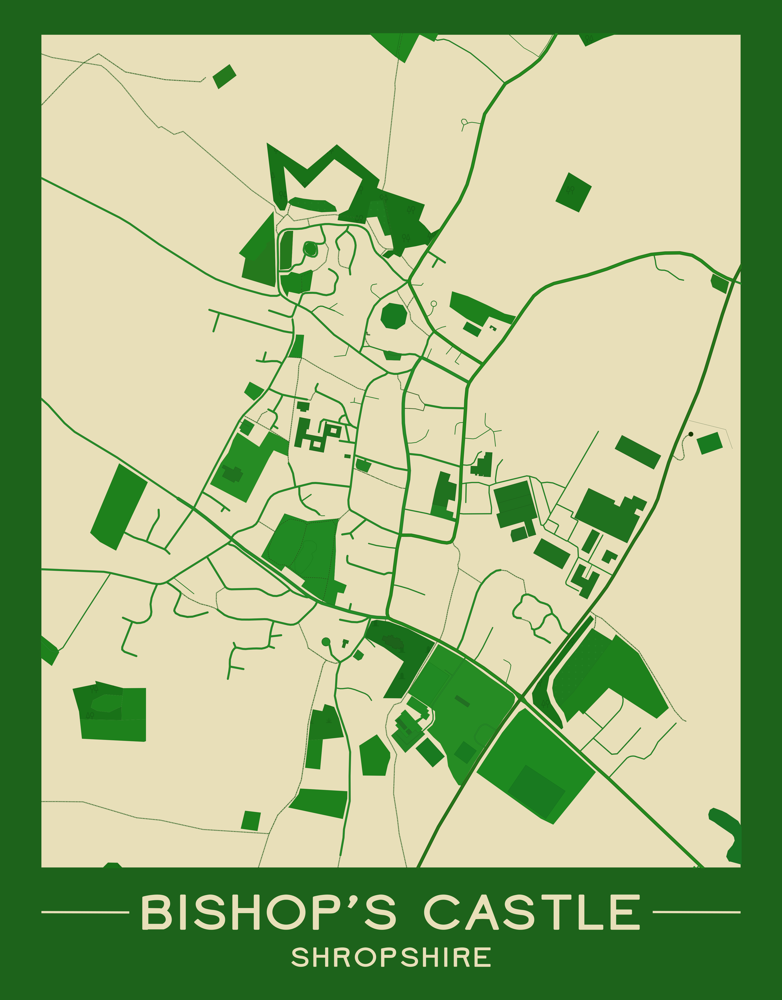

Minimal
Minimal map of Bishop’s Castle
My initial ideas included maps of just contours or just rivers, but once I’d seen the tutorial by Rick Johanson on YouTube that seemed a fun thing to try.
Inspiration from Rick Johanson YouTuble tutorial. Custom stylized maps with free OSM data.
Comparison of Bishop’s Castle in 1903 and 2023
November Map Challenge version. More minimal than the April version.

Looked at OS 25 inch map from 1903 via the National Library of Scotland map viewer to check which roads were there in 1903.
Interesting to see the filling in etc since 1903. Also very interesting to see that Corporation Street was already being built.
April version - original

Details below apply to both maps.
Data I used
What did I learn?
- Inkscape - select same fill / stroke. Far more selection options than I realised.
- Inkscape - Simple blend for changing all colours together!
More to find out!
- How easy is it to move masked map around the “page”? Move whole group, so it does work.
- Can I resize the clipping layer, or do I have to unclip and reclip? - most reliable to unclip and reclip.
What do I want to do next?
- I’d like to tidy this up a bit more.
- See questions in section above!
- Remove footpaths to minimize it further?
- How would a map of rivers, plus urban areas and/or woodland work? Would it look too minimal?
- Could I produce a map in QGIS, then export that as svg and do this? SVG export isn’t always reliable in QGIS.
- Happier with more minimal versions I produced in November. Makes the comparison between the two years much clearer.
How did I make the map?
- Saved map of area I wanted as SVG export from OpenStreetMap.
- Have to use standard layer.
- Click on
Share button on right.
- Share as
Image and set format to SVG. Chose custom dimensions and set on screen.
- Then
Download.
- In Inkscape:
- Set up map poster background:
- Rectangles and text
- Import svg map. Should come in as a group. Can either ungroup or enter group.
- Start deleting things you don’t want to include:
Edit > Select same allows you to choose all objects with same fill or stroke as selected object.- Remove background coloured objects too - cause problems later!
- Also looks cleaner if remove all smaller buildings - such as individual houses.
- Select all items, go to Stroke Properties, and change
Width from 100% to 40%. Lightens up the roads, in particular.
- Can end up with lots of empty groups in layers panel. Can remove using the Remove Empty Groups extension by Mario Voight. How to install extensions (Didn’t work in November 2023).
- Now group all map items, if not already grouped, and select the group.
- To set all to same colour:
Filters > Colour > Simple blend...- Choose a deepish colour, e.g. green, and
Apply. All the features you have selected should change to shades of that colour.
- Original video also colours water (large river) separately by selecting next.
- To mask the map:
- Make sure all map objects are grouped, but not stuff you don’t want masked!
- Create a rectangle above the area you want visible.
- Select both the rectangle and the group containing the map objects.
Object > Clip > Set clip. This should mask out the areas you don’t want showing.- To set up final layout:
- Find the map poster background you set up earlier, and pull it to where the map is - it could be quite a long way away!
- Resize if necessary and line up the inner rectangle with your map.
- Resize page to content if necessary.
- Export as png or pdf.